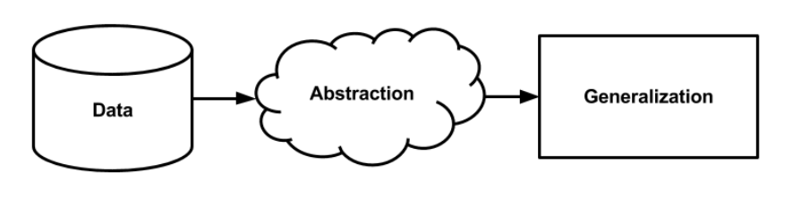
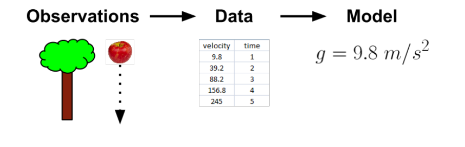
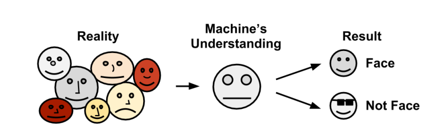
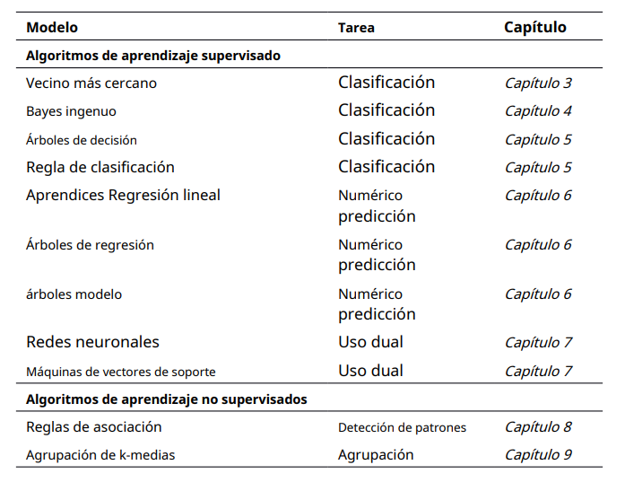
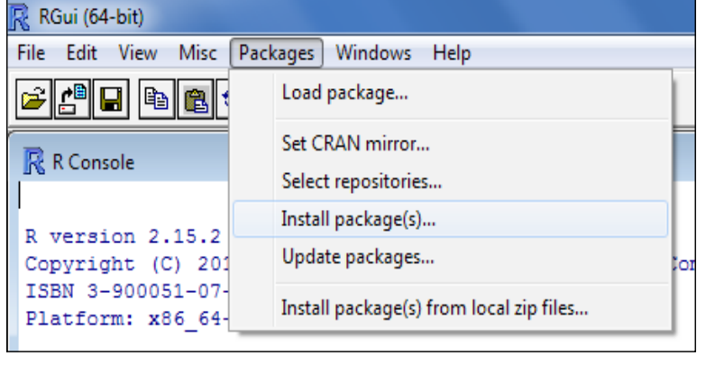
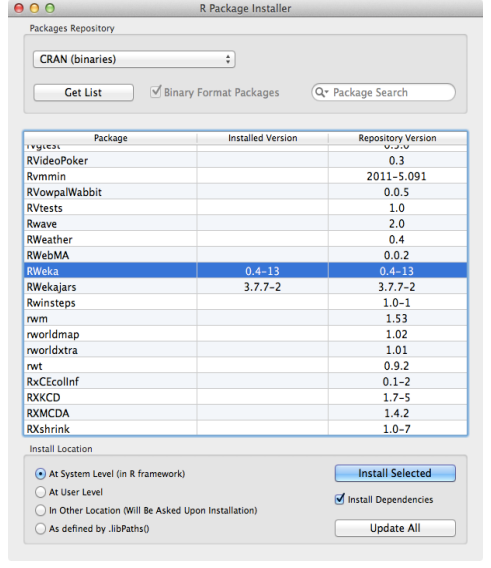
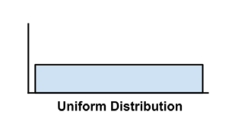
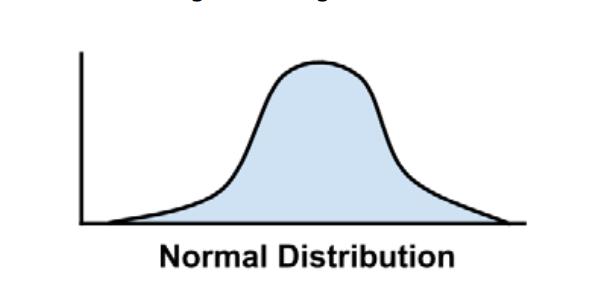
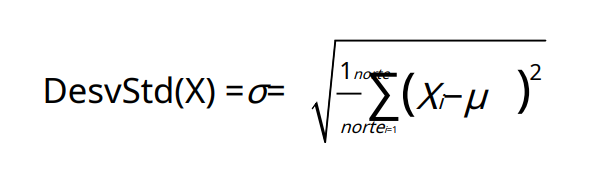
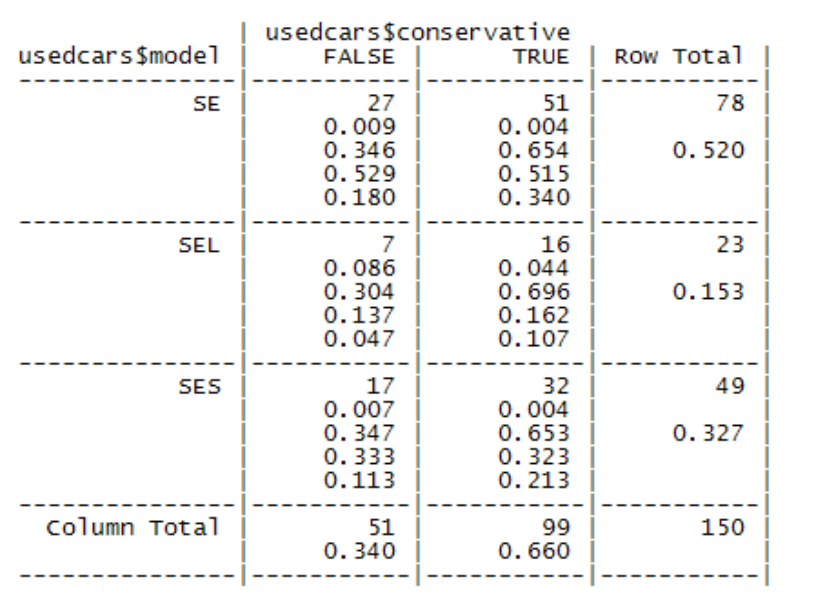

subject_name <- c("John Doe", "Jane Doe", "Steve Graves")
temperature <- c(98.1,98.6,101.4)
flu_status <- c(FALSE, FALSE, TRUE)Informe Dinámico: Resumen capítulo 1,2 (Machine Learning with R)
Capítulo 1: Introducing Machine Learning
La idea del aprendizaje automático puede ser malinterpretada debido a las representaciones exageradas en la ciencia ficción como que las máquinas aprenden a pensar por sí mismas y se rebelan contra la humanidad. Sin embargo, en la realidad, el aprendizaje automático se enfoca en aplicaciones prácticas y está más relacionado con la tarea de enseñar a una computadora a resolver problemas específicos. Además, el aprendizaje automático proporciona un conjunto de herramientas para transformar datos en conocimiento accionable, en este capítulo se explicarán los conceptos fundamentales que definen y diferencian los enfoques más comunes del aprendizaje automático.
Los orígenes del aprendizaje automático
Desde el nacimiento, estamos inundados de datos que nuestros sentidos procesan y nuestro cerebro convierte en experiencia.
Los primeros registros de bases de datos registraron información del entorno observable, como los patrones de planetas y estrellas, los resultados de experimentos biológicos y los registros de impuestos, enfermedades y poblaciones. Estos registros requieren que las personas primero observen y luego registren las observaciones.
Hoy en día, estas observaciones están cada vez más automatizadas y registradas sistemáticamente en bases de datos informáticas en constante crecimiento.
La invención de los sensores electrónicos contribuyó aún más a la riqueza de los datos registrados. Estos sensores procesan los datos de manera diferente a los humanos, lo que es beneficioso en muchos sentidos, ya que los datos sensoriales sin procesar pueden permanecer objetivos, sin traducirlos al lenguaje humano.
- Las observaciones de los sensores no tienen un componente subjetivo y no necesariamente reportan la situación real, ya que sus registros pueden diferir dependiendo del tipo de sensor utilizado para medir la misma situación. Por ejemplo, hay una diferencia entre una cámara que toma fotos en blanco y negro y una cámara que toma fotos en color.
Cada aspecto de nuestras vidas se registra a través de bases de datos y sensores. Gobiernos, empresas y particulares registran todo tipo de información, desde la más importante hasta la más básica. Vivimos en la era de los grandes datos (Big Data), donde tenemos una enorme cantidad de datos que pueden ser procesados por máquinas.
Se buscaba una forma sistemática de dar sentido a toda esta información para tomar decisiones informadas. La solución a este problema radica en el aprendizaje automático, que desarrolla algoritmos para transformar los datos en un comportamiento inteligente. Este campo surgió en un entorno donde los volúmenes de datos, los métodos estadísticos y el poder de cómputo se estaban desarrollando rápidamente, lo que permitió ciclos crecientes en la recopilación de datos más grandes e interesantes.
Diferencia entre aprendizaje automático y minería de datos.
El aprendizaje automático se enfoca en realizar tareas específicas, mientras que la minería de datos se enfoca en encontrar información valiosa en grandes bases de datos.
- Ejemplos: El aprendizaje automático se puede usar para enseñar a los robots a conducir, mientras que la minería de datos se puede usar para identificar los tipos de automóviles más seguros.
Usos y abusos del aprendizaje automático
El aprendizaje automático da sentido a datos complejos y tiene amplia aplicación en diferentes campos como:
Predecir los resultados de las elecciones
Identifique y filtre los mensajes de spam del correo electrónico
Prever actividad delictiva
Automatice las señales de tráfico de acuerdo con las condiciones de la carretera
Producir estimaciones financieras de tormentas y desastres naturales
Examinar la rotación de clientes
Crea aviones de pilotaje automático y coches de conducción automática.
Identificar personas con capacidad para donar
Dirigir la publicidad a tipos específicos de consumidores
Los algoritmos de aprendizaje automático toman datos e identifican patrones. En algunos casos, los resultados son tan exitosos que casi parecen llegar alcanzar un estado casi legendario. A pesar de estar familiarizado con los métodos de aprendizaje automático que funcionan detrás de escena, surge la sensación de asombro y preocupación que se genera al notar que los métodos de aprendizaje automático son capaces de conocernos mejor de lo que nosotros mismos lo que hacemos. Es importante considerar las implicaciones éticas que se derivan del uso de estas tecnologías en la extracción de datos.
Consideraciones éticas
El aprendizaje automático es una nueva disciplina que crea incertidumbre sobre las leyes y las normas sociales. Se debe tener cuidado al recopilar y analizar datos para no violar los términos de servicio, los acuerdos de uso de datos, la confianza o la privacidad.
Las leyes comerciales pueden prohibir el uso de datos raciales, étnicos o religiosos. Incluso cuando se excluyen dichos datos, los algoritmos de aprendizaje automático pueden extraer esta información de datos aparentemente inocuos. En tales casos, se debe considerar la posibilidad de excluir por completo los datos identificables.
La privacidad es importante para los clientes y pueden sentirse aprovechados si sus datos se utilizan para fines para los que no han dado su consentimiento. Los requisitos de privacidad varían según los antecedentes, la edad y la ubicación. Es importante considerar las influencias culturales antes de iniciar un proyecto.
¿Cómo aprenden las máquinas?
El aprendizaje automático implica que una máquina utilice la experiencia pasada para mejorar su rendimiento en el futuro. Sin embargo, esta definición no explica cómo estas tecnologías realmente convierten los datos en conocimiento procesable.
El proceso de aprendizaje, ya sea para un humano o una máquina, se puede dividir en tres componentes básicos.
Entrada de datos: Utiliza la observación, el almacenamiento de memoria y el recuerdo.
Abstracción: Implica la traducción de datos en representaciones más amplias.
Generalización: Utiliza datos abstractos para formar una base para la acción.

Para una mejor comprensión del proceso de aprendizaje: Los estudiantes pueden volverse ineficientes con la memoria visual mientras se preparan para los exámenes porque el aprendizaje implica más que solo ingresar datos, se requiere comprensión.
El proceso de aprendizaje consta de tres componentes: entrada de datos, abstracción y generalización. Estos componentes están interconectados y estrechamente relacionados. Si bien los humanos realizan este proceso de manera inconsciente, la computadora debe aclarar estos procesos. La ventaja del aprendizaje automático es que el conocimiento adquirido es transparente y puede verificarse para uso futuro.
Abstracción y representación del conocimiento
El proceso de abstracción es esencial para comprender los datos de entrada sin procesar y transformarlos en un formato estructurado para su procesamiento mediante algoritmos de aprendizaje.
El proceso de representación del conocimiento implica que las computadoras transformen la entrada sin procesar en modelos que describen patrones estructurados de datos. Hay varios tipos de modelos, como modelos gráficos, modelos basados en reglas y modelos de redes neuronales. Ejemplos, incluyen:
Ecuaciones, diagramas como árboles y gráficos
Reglas lógicas if/else
El proceso de ajustar un modelo a un conjunto de datos se llama “entrenamiento” porque este término describe mejor el proceso real que ocurre cuando el modelo se ajusta a los datos. El texto también dice que el aprendizaje requiere un paso adicional para generalizar el conocimiento a datos futuros, y que la capacitación involucra a un maestro humano que impone un modelo de aprendizaje automático a un aprendiz automático. La figura 2 muestra un ejemplo.

Aunque la mayoría de los modelos de aprendizaje automático no conducen al desarrollo de teorías científicas revolucionarias, pueden revelar relaciones importantes entre datos que nunca antes se habían visto. Los ejemplos incluyen el descubrimiento de genes que pueden estar relacionados con la diabetes, la identificación de patrones en transacciones bancarias que pueden indicar actividad fraudulenta y el descubrimiento de combinaciones de rasgos que pueden indicar nuevas enfermedades.
En resumen, los modelos de aprendizaje automático pueden proporcionar nuevos conocimientos sobre los datos y revelar conexiones significativas.
Generalización
El término generalización se refiere al proceso de transformar el conocimiento abstracto en una forma utilizable. Este proceso es difícil de describir y tradicionalmente se considera que busca en toda la colección de patrones que pueden haber sido adquiridos durante el entrenamiento. La generalización implica el importante descubrimiento de reducir ese conjunto a un número manejable, y los algoritmos de aprendizaje automático utilizan heurísticas, o conjeturas fundamentadas, para desglosar más rápidamente conjuntos de conceptos.
Los algoritmos de aprendizaje automático pueden estar sesgados y sacar conclusiones incorrectas debido al uso inadecuado de la heurística. Por ejemplo, un algoritmo que reconoce rostros puede tener problemas con rostros que no coinciden con su modelo y está sesgado contra ciertas características.

Evaluar el éxito del aprendizaje
El sesgo es un aspecto inevitable del aprendizaje automático debido al proceso de abstracción y generalización. Cada modelo de aprendizaje tiene sus propias debilidades y sesgos, y no existe un modelo universal que pueda superarlos. Por tanto, el éxito de un modelo depende de su capacidad para generalizar los resultados a nuevos datos, aunque los modelos rara vez generalizan perfectamente a todas las sorpresas.
Una de las razones por las que los modelos de aprendizaje automático no se generalizan perfectamente es el problema del ruido en los datos. Este ruido es causado por variaciones inexplicables en los datos, que pueden ser causados por eventos aleatorios, errores de medición causados por sensores imprecisos, problemas de informes de datos y errores de registro de datos, entre otros. Los intentos de modelar el ruido en los datos pueden llevar a conclusiones incorrectas y a modelos más complejos que no se generalizan bien en casos nuevos.
Pasos para aplicar el aprendizaje automático a sus datos
El proceso de cualquier tarea de aprendizaje automático se puede dividir en cinco pasos manejables.
El primer paso implica la recolección de datos en un formato electrónico adecuado para el análisis.
El segundo paso se centra en la exploración y preparación de los datos, lo que requiere una gran cantidad de intervención humana.
El tercer paso implica entrenar un modelo en los datos
El cuarto paso evalúa el rendimiento del modelo.
Como cada modelo de aprendizaje automático está sesgado, el quinto y último paso implica mejorar el rendimiento del modelo utilizando estrategias más avanzadas, incluyendo la recolección de datos adicionales y realizar trabajo preparatorio adicional.
Después de los pasos de recopilación y preparación de datos, capacitación del modelo, evaluación y mejora del rendimiento, el modelo se puede implementar para la tarea prevista, como proporcionar datos de valoración para pronósticos, pronósticos financieros, automatización de tareas, etc. Los éxitos y errores en la implementación de modelos pueden proporcionar datos adicionales para entrenar la próxima generación de modelos.
Elegir un algoritmo de aprendizaje automático
El proceso de selección de un algoritmo de aprendizaje automático implica hacer coincidir las características de los datos que se van a aprender con los sesgos de los métodos disponibles. La elección del algoritmo depende del tipo de datos a analizar y de la tarea propuesta. Es importante tener en cuenta este proceso al recopilar, investigar y limpiar datos.
Pensando en los datos de entrada
Los algoritmos de aprendizaje automático requieren datos de entrenamiento en forma de ejemplos y funciones.
En el análisis de datos, una “unidad de observación” es la unidad por la cual se mide un evento, que puede ser una transacción, persona, tiempo, región geográfica o medida. También puede ser una combinación de estas categorías, como el seguimiento del año personal de una persona en diferentes momentos.
En el aprendizaje automático, las funciones son atributos o características de ejemplos que se pueden usar para aprender un concepto deseado. Los atributos pueden variar de un conjunto de datos a otro y pueden ser palabras en un correo electrónico o datos genómicos de una biopsia.
Pensando en los tipos de algoritmos de aprendizaje automático
Existen dos tipos de algoritmos de aprendizaje automático: supervisados y no supervisados. Los algoritmos supervisados se usan para construir modelos predictivos, mientras que los algoritmos no supervisados se usan para construir modelos descriptivos. El tipo de algoritmo a utilizar depende de la tarea de aprendizaje a implementar.
Los modelos predictivos: Se utilizan para predecir un valor utilizando otros valores en un conjunto de datos. No necesariamente necesitan predecir eventos futuros y se pueden usar para predecir eventos pasados o eventos en tiempo real, como el control de semáforos durante las horas pico.
Los modelos descriptivos: Se utilizan para resumir datos de formas nuevas e interesantes y no tienen un objetivo de aprendizaje específico que los distinga de los modelos predictivos. Dado que no existe un establecimiento de objetivos, el proceso de formación se denomina aprendizaje no supervisado. Aunque es difícil imaginar las aplicaciones de los modelos descriptivos, a menudo se utilizan en la minería de datos.
Hacer coincidir sus datos con un algoritmo apropiado
La siguiente tabla muestra los tipos generales de algoritmos de aprendizaje automático, aunque no cubre todos los algoritmos disponibles.

Uso de R para el aprendizaje automático
Muchos algoritmos necesarios para el aprendizaje automático en R no están incluidos en la instalación básica, pero debido a que R es gratuito y de código abierto, la comunidad de expertos ha agregado algoritmos necesarios para el aprendizaje automático en R base.
Instalación y carga de paquetes R
El paquete RWeka que proporciona acceso a algoritmos de aprendizaje automático en el paquete Weka basado en Java. En el siguiente enlace se otorga más información:
Weka 3 - Data Mining with Open Source Machine Learning Software in Java (waikato.ac.nz)
Instalación de un paquete R
La forma más directa de instalar un paquete es a través de:
- instalar.paquetes()función.
Para instalar elRWekapaquete, en el símbolo del sistema R simplemente escriba:
- > instalar.paquetes(“RWeka”)
R luego se conectará a CRAN y descargará el paquete en el formato correcto para su sistema operativo.
Instalación de un paquete mediante la interfaz de apuntar y hacer clic
R es una interfaz gráfica de usuario (GUI) para instalar paquetes disponibles en el menú Paquetes en Windows y Mac OS X.

El proceso de instalación del paquete RWeka es diferente en Windows y Mac OS X. En Windows, después de seleccionar la ubicación del espejo CRAN, se muestra una lista de paquetes donde debe buscar RWeka y hacer clic en Aceptar para instalar el paquete y sus dependencias en la ubicación predeterminada.
En Mac OS X, haga clic en “Obtener lista” para cargar una lista de paquetes, busque RWeka (o utilice la función de búsqueda de paquetes), seleccione “Instalar seleccionados” y, opcionalmente, marque la casilla “Instalar seleccionados”. dependencias” para instalar dependencias con paquetes.

Resumen
El aprendizaje automático es una herramienta poderosa que surgió de la intersección de las estadísticas, la ciencia de bases de datos y la informática. Se utiliza para encontrar información procesable en grandes volúmenes de datos, pero se debe tener cuidado para evitar abusos comunes.
El aprendizaje automático implica abstraer datos en representaciones estructuradas y generalizar esa estructura en acción, y puede dividirse en tareas específicas como la clasificación y la predicción numérica. R proporciona soporte de aprendizaje automático en forma de paquetes descargables gratuitamente, pero estos deben instalarse antes de su uso.
Capítulo 2
Gestión y comprensión de datos
El proceso de administrar y comprender los datos es una parte crítica y temprana de cualquier proyecto de aprendizaje automático porque cualquier algoritmo es tan bueno como sus datos de entrada. Aunque quizás no sea tan valiosa como la construcción de modelos, la preparación y exploración de datos es muy importante porque en muchos casos los datos de entrada son complejos y desordenados. La mayor parte del esfuerzo que se dedica a un proyecto de aprendizaje automático se dedica a esta fase.
Vectores
Una estructura de datos básica en R es un vector que almacena un conjunto ordenado de elementos del mismo tipo. El aprendizaje automático utiliza varios tipos comunes de vectores, como enteros, números, caracteres y booleanos, y hay dos valores especiales que representan valores faltantes. Comprender y manipular vectores es esencial para la preparación y el análisis de datos en proyectos de aprendizaje automático.
Se pueden crear vectores simples usando:
La función de combinación C ().
Dar un nombre usando el operador de flecha <-, que es el operador de asignación de R.
Operador de asignación = en muchos otros lenguajes de programación.
Ejemplo: Un conjunto de vectores que contengan datos sobre tres pacientes médicos.
Para obtener la temperatura corporal de la paciente Jane Doe, o el elemento 2 en el vector de temperatura, simplemente escriba:
temperature[2][1] 98.6Se puede obtener un rango de valores utilizando el operador de dos puntos.
temperature[2:3][1] 98.6 101.4Para excluir los datos de temperatura de Jane Doe, escriba:
temperature[-2][1] 98.1 101.4Para incluir las dos primeras lecturas de temperatura pero excluir la tercera, escriba:
temperature[c(TRUE,TRUE,FALSE)][1] 98.1 98.6Factores
R proporciona una estructura de datos llamada factores para representar variables nominales en el aprendizaje automático. Los factores son un caso especial de vectores diseñados para este propósito.
El uso de factores en lugar de vectores de caracteres tiene varias ventajas en términos de eficiencia de la memoria y la capacidad de manejar variables categóricas en algoritmos de aprendizaje automático. Los factores almacenan etiquetas de clase solo una vez y algunos algoritmos tienen rutinas especiales para manejar variables categóricas codificadas como factores. Esto asegura que el modelo manejará los datos correctamente.
Para crear un factor a partir de un personaje vector, simplemente aplique el factor()función. Por ejemplo:
gender <- factor(c("MASCULINO","FEMENINO","MASCULINO"))
gender[1] MASCULINO FEMENINO MASCULINO
Levels: FEMENINO MASCULINOCuando se crean factores, podemos agregar niveles adicionales que pueden no aparecer en los datos.
blood<-factor(c("O","AB","A"),levels = c("A","B","AB","O"))
blood[1] O AB A
Levels: A B AB ONote que cuando definimos sangre factor para los tres pacientes, especificamos un vector adicional de cuatro posibles tipos de sangre usando niveles =declaración. Como resultado, aunque nuestros datos incluyen solo tipos O, AB, y A, los cuatro tipos se almacenan con sangre factor indicado por la salida Niveles: AB AB O. El almacenamiento del nivel adicional permite la posibilidad de agregar datos con el otro tipo de sangre en el futuro.
Listas
Las listas en R le permiten almacenar diferentes tipos de valores y se usan comúnmente para almacenar diferentes tipos de datos de entrada y salida, así como conjuntos de parámetros de configuración para modelos de aprendizaje automático.
Para ilustrar las listas, considere el conjunto de datos de pacientes médicos. Si quisiéramos mostrar todos los datos de John Doe (sujeto 1), necesitaríamos ingresar cinco comandos R:
subject_name[1][1] "John Doe"temperature[1][1] 98.1flu_status[1][1] FALSEgender[1][1] MASCULINO
Levels: FEMENINO MASCULINOblood[1][1] O
Levels: A B AB OEsto parece mucho trabajo para mostrar los datos médicos de un paciente. La estructura de la lista nos permite agrupar todos los datos de un paciente en un objeto que podemos usar repetidamente. Similar a crear un vector con C(),se crea una lista usando lista()función como se muestra en el siguiente ejemplo:
subject1 <- list(fullname = subject_name[1],
temperature = temperature[1],
flu_status = flu_status[1],
gender = gender[1],
blood = blood[1])
subject1$fullname
[1] "John Doe"
$temperature
[1] 98.1
$flu_status
[1] FALSE
$gender
[1] MASCULINO
Levels: FEMENINO MASCULINO
$blood
[1] O
Levels: A B AB OImprimir los datos de un paciente ahora es cuestión de escribir un solo comando:
Marcos de datos
Un marco de datos es una estructura de datos importante que se usa en el aprendizaje automático de R, similar a una hoja de cálculo o una base de datos que contiene filas y columnas de datos. Consiste en vectores o listas de factores con el mismo número de valores, por lo que es una combinación de vectores y listas.
Usando los vectores de datos de pacientes que creamos previamente, elmarco de datos()la función los combina en un marco de datos:
pt_data <- data.frame(subject_name, temperature, flu_status,
gender, blood, stringsAsFactors = FALSE)
pt_data subject_name temperature flu_status gender blood
1 John Doe 98.1 FALSE MASCULINO O
2 Jane Doe 98.6 FALSE FEMENINO AB
3 Steve Graves 101.4 TRUE MASCULINO AEn comparación con los vectores, factores y listas unidimensionales, un marco de datos tiene dos dimensiones y, por lo tanto, se muestra en formato de matriz.
La forma más directa de extraer un solo elemento, en este caso un vector o columna de datos, es referirse a él por su nombre. Por ejemplo, para obtener nombre del tema vectorial, tipo.
pt_data$subject_name[1] "John Doe" "Jane Doe" "Steve Graves"Se puede usar un vector de nombres para extraer varias columnas de un marco de datos:
pt_data[c("temperature", "flu_status")] temperature flu_status
1 98.1 FALSE
2 98.6 FALSE
3 101.4 TRUEPara extraer el valor de la primera fila y la segunda columna del marco de datos del paciente (el valor de temperatura para John Doe), ingresaría:
pt_data[1, 2][1] 98.1Si desea más de una fila o columna de datos, puede hacerlo especificando vectores para los números de fila y columna que desea.
pt_data[c(1,3),c(2,4)] temperature gender
1 98.1 MASCULINO
3 101.4 MASCULINOPara extraer todas las filas o columnas, en lugar de enumerarlas todas, simplemente deje en blanco la parte de la fila o la columna.
pt_data[, 1][1] "John Doe" "Jane Doe" "Steve Graves"Para extraer todas las columnas de la primera fila:
pt_data[1, ] subject_name temperature flu_status gender blood
1 John Doe 98.1 FALSE MASCULINO OY para extraer todo:
pt_data[ , ] subject_name temperature flu_status gender blood
1 John Doe 98.1 FALSE MASCULINO O
2 Jane Doe 98.6 FALSE FEMENINO AB
3 Steve Graves 101.4 TRUE MASCULINO ASe puede acceder a las columnas por nombre en lugar de por posición, y se pueden usar signos negativos para excluir filas o columnas de datos. Por lo tanto, la declaración:
pt_data[c(1, 3), c("temperature", "gender")] temperature gender
1 98.1 MASCULINO
3 101.4 MASCULINOEs equivalente a:
pt_data[-2,c(-1,-3,-5)] temperature gender
1 98.1 MASCULINO
3 101.4 MASCULINOMatrices y arreglos
La matriz es una estructura de datos que representa una tabla bidimensional, con filas y columnas de datos.
Las matrices R pueden contener cualquier tipo de datos, aunque se usan con mayor frecuencia para operaciones matemáticas y, por lo tanto, normalmente almacenan solo datos numéricos.
Para crear una matriz, simplemente suministre un vector de datos matriz()función, junto con un parámetro que especifica el número de filas (fila)o número de columnas (ncol).
m <- matrix(c('a', 'b', 'c', 'd'), nrow = 2)
m [,1] [,2]
[1,] "a" "c"
[2,] "b" "d" Esto es equivalente a la matriz producida usando ncol = 2:
m <- matrix(c('a', 'b', 'c', 'd'), ncol = 2)
m [,1] [,2]
[1,] "a" "c"
[2,] "b" "d" Con seis valores, solicitar dos filas crea una matriz con tres columnas:
m <- matrix(c('a', 'b', 'c', 'd', 'e', 'f'), nrow = 2)
m [,1] [,2] [,3]
[1,] "a" "c" "e"
[2,] "b" "d" "f" De manera similar, solicitar dos columnas crea una matriz con tres filas:
m <- matrix(c('a', 'b', 'c', 'd', 'e', 'f'), ncol = 2)
m [,1] [,2]
[1,] "a" "d"
[2,] "b" "e"
[3,] "c" "f" Del mismo modo, se pueden solicitar filas o columnas enteras:
m[1, ][1] "a" "d"m[, 1][1] "a" "b" "c"Gestión de datos con R
Uno de los desafíos de trabajar con grandes conjuntos de datos es la recopilación, preparación y gestión de datos de múltiples fuentes. Pero las herramientas de R facilitan esta tarea al permitirle cargar datos de muchos formatos comunes.
Guardar y cargar estructuras de datos R
Para evitar tener que volver a crear el marco de datos cada vez que reinicia su sesión de R, puede usar la función Guardar() para guardar la estructura de datos en un archivo que luego se puede volver a cargar o transferir a otro sistema.
La función save() escribe una estructura de datos R en la ubicación especificada por el parámetro de archivo y el archivo de datos R tiene la extensión .RData.
Si tuviéramos tres objetos llamadosx, y,yz,podríamos guardarlos en un archivomisdatos.RData usando el siguiente comando:
save(x, y, z, file = "mydata.RData"
Para cargar mydat.RData que guardamos en el código anterior, simplemente escriba:
load("mydata.RData")
Importante: Si necesita terminar su sesión de R rápidamente, save.image().De forma predeterminada, R buscará este archivo la próxima vez que inicie R, y su sesión se volverá a crear tal como la dejó.
Importar y guardar datos de archivos CSV
Los archivos de texto son una forma común de almacenar datos públicos porque están disponibles en cualquier sistema operativo y se pueden importar y exportar desde programas como Excel.
Estos archivos se pueden estructurar como una matriz, tabulada, donde cada fila es un ejemplo y contiene un número igual de funciones separadas por un delimitador predefinido.
La primera fila también suele contener los nombres de columna de los datos, conocida como fila de encabezado.
Un archivo CSV que represente el conjunto de datos médicos construido previamente tendría el siguiente aspecto:
subject_name,temperature,flu_status,gender,blood_type
John Doe,98.1,FALSE,MALE,O Jane Doe,98.6,FALSE,FEMALE,AB
Steve Graves,101.4,TRUE,MALE,A
Para cargar este archivo CSV en R
pt_data <- read.csv("pt_data.csv", stringsAsFactors = FALSE)
Si sus datos residen fuera del directorio de trabajo de R, puede especificar la ruta al archivo CSV especificando la ruta completa.
Si un archivo CSV no tiene encabezado, especifique la opción encabezado = FALSO como se muestra en el siguiente comando, y R asignará nombres de características predeterminados en la formaV1, V2: mydata <- read.csv("mydata.csv", stringsAsFactors = FALSE, header = FALSE)
La función read.csv() es un caso especial de read.table()función, que puede leer datos tabulares en muchas formas diferentes.
Para guardar un marco de datos en un archivo CSV, use el método write.CSV ().
Si su marco de datos se llama pt_data, simplemente ingrese:
write.csv(pt_data, file = "pt_data.csv")
Importación de datos de bases de datos SQL
Si sus datos se almacenan en un ODBC (Conectividad de base de datos abierta) SQL (lenguaje de consulta estructurado) base de datos como Oracle, MySQL, PostgreSQL, Microsoft SQL o SQLite, la RODBC paquete creado por Brian Ripley se puede utilizar para importar estos datos directamente en un marco de datos R.
ODBC es un protocolo estándar para conectarse a bases de datos independientemente del sistema operativo oSGBD(Sistema de administración de base de datos).
Deberá instalar y cargar el RODBC paquete:
install.packages("RODBC")
library(RODBC)
Exploración y comprensión de datos
La siguiente etapa del aprendizaje automático consiste en analizar a fondo los datos recopilados en R.
Se examinan las características y los ejemplos para identificar las peculiaridades y elegir el mejor modelo.
La recopilación de datos usedcars.csv es un ejemplo de exploración de datos sobre autos usados a la venta en un sitio web estadounidense.
Podemos usar read.csv() función para cargar los datos en un marco de datos R:
usedcars <- read.csv("usedcars.csv", stringsAsFactors = FALSE)Explorando la estructura de los datos
La función str() proporciona un método para mostrar la estructura de un marco de datos, o cualquier estructura de datos R, incluidos vectores y listas.
Se puede utilizar para crear el esquema básico de nuestro diccionario de datos:
str(usedcars)'data.frame': 150 obs. of 6 variables:
$ year : int 2011 2011 2011 2011 2012 2010 2011 2010 2011 2010 ...
$ model : chr "SEL" "SEL" "SEL" "SEL" ...
$ price : int 21992 20995 19995 17809 17500 17495 17000 16995 16995 16995 ...
$ mileage : int 7413 10926 7351 11613 8367 25125 27393 21026 32655 36116 ...
$ color : chr "Yellow" "Gray" "Silver" "Gray" ...
$ transmission: chr "AUTO" "AUTO" "AUTO" "AUTO" ...Se obtuvo gracias al comando:
Hay 150 observaciones en los datos, lo que sugiere que se trata de ejemplos de automóviles usados en venta.
Las 6 variables declaración se refiere a las seis características que se registraron en los datos.
La variable, chr nos dice que la característica es de tipo carácter.
A veces, los nombres de las variables en los conjuntos de datos no tienen sentido y pueden requerir más investigación para comprender lo que realmente representan. Si bien los nombres pueden ser útiles, es importante ser selectivo y verificar las etiquetas de las variables.
Explorando variables numéricas
La función summary() muestra varias estadísticas resumidas comunes.
Ejemplo una sola característica del año:
summary(usedcars$year) Min. 1st Qu. Median Mean 3rd Qu. Max.
2000 2008 2009 2009 2010 2012 También podemos usar la función summary() para obtener estadísticas de resumen para varias variables numéricas al mismo tiempo:
summary(usedcars[c("price", "mileage")]) price mileage
Min. : 3800 Min. : 4867
1st Qu.:10995 1st Qu.: 27200
Median :13592 Median : 36385
Mean :12962 Mean : 44261
3rd Qu.:14904 3rd Qu.: 55125
Max. :21992 Max. :151479 La función proporciona herramientas simples para investigar datos.
- Se pueden dividir en dos tipos:
Medidas de centro
Medidas de dispersión
Medición de la tendencia central: media y mediana
Las medidas de tendencia central son estadísticas que se utilizan para encontrar un valor en medio de un conjunto de datos, siendo la media la medida más familiar y comúnmente utilizada. El promedio es la suma de todos los valores dividida por el número de valores y representa el valor típico en el grupo. Sirve como punto de referencia para juzgar otros valores en el conjunto.
Por ejemplo, para calcular el ingreso medio en un grupo de tres personas con ingresos de $35 000, $45 000 y $55 000, podríamos escribir:
(36000 + 44000 + 56000) / 3[1] 45333.33- La función mean() calcula la media de un vector de números:
mean(c(36000, 44000, 56000))[1] 45333.33El ingreso medio de este grupo de personas es de $45.333,33.
- La mediana, que es el valor que aparece en la mitad de una lista ordenada de valores. R proporciona la función median(), podemos aplicar a nuestros datos salariales como se muestra en el siguiente ejemplo:
median(c(36000, 44000, 56000))[1] 44000Medición de la dispersión: cuartiles y el resumen de cinco números
Medir la media y la mediana es útil para resumir rápidamente los datos, pero no nos proporciona información sobre la diversidad de los mismos.
Para medir la dispersión, es necesario utilizar estadísticas que se ocupen de la variabilidad en los datos.
El resumen de cinco números es un conjunto de cinco estadísticas que representan la dispersión de un conjunto de datos:
Mínimo (Min.)
Primer cuartil o Q1 (1st Qu.)
Mediana o Q2 (Median)
Tercer cuartil o Q3 (3rd Qu.)
Máximo (Max.)
El lapso entre el valor mínimo y máximo se conoce como range.
- La función range() devuelve tanto el valor mínimo como el máximo.
Ejemplo:
range(usedcars$price)[1] 3800 21992diff(range(usedcars$price))[1] 18192Los cuartiles primero y tercero, Q1 y Q3, se refieren al valor por debajo o por encima del cual se encuentra una cuarta parte de los valores La diferencia entre Q1 y Q3:
Se conoce como rango intercuartil (IQR), y se puede calcular con la función IQR():
IQR(usedcars$price)[1] 3909.5La función quantile() devuelve el resumen de cinco números.
quantile(usedcars$price) 0% 25% 50% 75% 100%
3800.0 10995.0 13591.5 14904.5 21992.0 Si especificamos un adicional probs parámetro usando un vector que denota puntos de corte, podemos obtener cuantiles arbitrarios, como los percentiles 1 y 99:
quantile(usedcars$price, probs = c(0.01, 0.99)) 1% 99%
5428.69 20505.00 La función de secuencia seq() se utiliza para generar vectores de valores espaciados uniformemente.
quantile(usedcars$price, seq(from = 0, to = 1, by = 0.20)) 0% 20% 40% 60% 80% 100%
3800.0 10759.4 12993.8 13992.0 14999.0 21992.0 Visualización de variables numéricas: diagramas de caja
La visualización de variables numéricas es útil para diagnosticar problemas de datos. Un gráfico común es el diagrama de caja, que muestra el centro y la distribución de variables numéricas en un formato fácil de entender. Este gráfico le permite comprender rápidamente el rango y la varianza de una variable y compararla con otras variables. También se conoce como pieza de caja y bigotes.
Los comandos para crear diagramas de caja de precio y kilometraje son:
boxplot(usedcars$price, main="Boxplot of Used Car Prices",
ylab="Price ($)")
boxplot(usedcars$mileage, main="Boxplot of Used Car Mileage",
ylab="Odometer (mi.)")
Al leer el gráfico de abajo hacia arriba, las líneas horizontales representan Q1, Q2 (mediana) y Q3.
La mediana está representada por una línea negra alineada con los valores de precio y kilometraje en el eje vertical.
Importante: En diagramas simples como se muestra arriba:
Los anchos de caja y bigotes son arbitrarios y no se especifican propiedades de datos.
Para un análisis más complejo, es la forma y el tamaño de la caja se pueden utilizar la comparación más fácil de datos entre diferentes grupos.
Visualización de variables numéricas – histogramas
Un histograma es una forma de representar gráficamente la distribución de una variable numérica.
El histograma se compone de una serie de barras con alturas que indican el conteo, o frecuencia, de valores que caen dentro de cada uno de los contenedores de igual tamaño que dividen los valores.
Es una herramienta útil para determinar la forma de la distribución de datos e identificar patrones o anomalías en los datos.
Los comandos para crear un histograma son:
La función hist() crea un histograma:
hist(usedcars$price, main = "Histogram of Used Car Prices",
xlab = "Price ($)")
Las líneas verticales que separan las barras, tal como están etiquetadas en el eje horizontal, indican los puntos inicial y final del rango de valores del contenedor.
En el precio histograma, cada una de las 10 barras abarca un intervalo de $2,000, comenzando en $2,000 y terminando en $22,000.
La barra más alta en el centro de la figura cubre el rango de $12 000 a $14 000 y tiene una frecuencia de 50.
Dado que sabemos que nuestros datos incluyen 150 autos, sabemos que un tercio de todos los autos tienen un precio de $12 000 a $14 000. Casi 90 autos, más de la mitad, tienen un precio de $12,000 a $16,000.
hist(usedcars$mileage, main = "Histogram of Used Car Mileage",
xlab = "Odometer (mi.)")
- El histograma kilometraje incluye ocho barras que indican intervalos de 20 000 millas cada uno, comenzando en 0 y terminando en 160 000 millas.
La forma de los dos histogramas es algo diferente: Parece que los precios de los autos usados tienden a dividirse equitativamente a ambos lados del medio, mientras que el kilometraje de los autos se extiende más hacia la derecha.
Comprensión de datos numéricos: distribuciones uniformes y normales
La distribución de una variable describe la probabilidad de que un valor caiga dentro de varios rangos.
Una distribución uniforme ocurre cuando todos los valores tienen la misma probabilidad de ocurrir. Es fácil de detectar con un histograma donde las barras tienen aproximadamente la misma altura.

Es importante tener en cuenta que no todos los eventos aleatorios son uniformes.
Distribución normal es una distribución de datos en forma de campana. La curva de campana estereotipada se muestra en la figura 8:

Medición de la dispersión: varianza y desviación estándar
La propagación se mide mediante una estadística llamada desviación estándar.
La desviación estándar es la raíz cuadrada de la varianza y se denota por sigma como se muestra en la siguiente fórmula:

Para obtener la varianza y la desviación estándar se utiliza las siguientes funciones:
var(usedcars$price)[1] 9749892sd(usedcars$price)[1] 3122.482var(usedcars$mileage)[1] 728033954sd(usedcars$mileage)[1] 26982.1Al interpretar la varianza, los números más grandes indican que los datos se distribuyen más ampliamente alrededor de la media.
La desviación estándar indica, en promedio, cuánto difiere cada valor de la media.
Explorando variables categóricas
Los datos categóricos se examinan mediante tablas en lugar de estadísticas de resumen.
Una tabla que presenta una sola variable categórica se conoce como tabla unidireccional.
La función table() se puede usar para generar tablas unidireccionales para nuestros datos de autos usados:
table(usedcars$year)
2000 2001 2002 2003 2004 2005 2006 2007 2008 2009 2010 2011 2012
3 1 1 1 3 2 6 11 14 42 49 16 1 table(usedcars$model)
SE SEL SES
78 23 49 table(usedcars$color)
Black Blue Gold Gray Green Red Silver White Yellow
35 17 1 16 5 25 32 16 3 Los resultados de la prop.tabla() se puede combinar con otras funciones de R para transformar la salida:
color_table <- table(usedcars$color)
color_pct <- prop.table(color_table) * 100
round(color_pct, digits = 1)
Black Blue Gold Gray Green Red Silver White Yellow
23.3 11.3 0.7 10.7 3.3 16.7 21.3 10.7 2.0 Medición de la tendencia central: La moda
La moda de una característica es el valor que ocurre con mayor frecuencia. Al igual que la media y la mediana, la moda es otra medida de tendencia central.
A menudo se usa para datos categóricos, ya que la media y la mediana no están definidas para variables nominales.
Explorando relaciones entre variables
Las relaciones de más de dos variables se llaman multivariantes relaciones.
Visualización de relaciones: Diagramas de dispersión
Un diagrama de dispersión es un gráfico bidimensional que muestra una relación bidimensional entre dos funciones.
Un valor de atributo se utiliza para determinar la posición horizontal del punto, mientras que el otro valor de atributo determina la posición vertical.
Los patrones de ubicaciones de puntos pueden revelar asociaciones entre dos rasgos.
El comando completo para crear nuestro diagrama de dispersión es:
plot(x = usedcars$mileage, y = usedcars$price,
main = "Scatterplot of Price vs. Mileage",
xlab = "Used Car Odometer (mi.)",
ylab = "Used Car Price ($)")
Al observar un diagrama de dispersión que muestra la relación entre los precios de los autos usados y las lecturas del odómetro, puede ver que a medida que aumenta el valor en el eje horizontal (kilometraje), el valor en el eje vertical (precio) tiende a disminuir a medida que disminuye el valor.
Esto significa que los coches con mayor kilometraje son más baratos. Es una idea que cualquier persona que haya comprado o vendido un auto usado generalmente entenderá.
La fuerza de una asociación lineal entre dos variables se mide mediante una estadística conocida como correlación.
Examen de las relaciones: Tabulaciones cruzadas de dos factores
Una tabulación cruzada es una herramienta para probar la relación entre dos variables nominales.
Esta herramienta es similar a un gráfico de dispersión en el sentido de que le permite examinar cómo varía el valor de una variable con otra variable.
Una tabulación cruzada es una tabla en la que las filas representan los niveles de una variable y las columnas representan los niveles de otra variable.
El conteo en cada celda de la tabla indica el número de valores que pertenecen a una determinada combinación de filas y columnas.
Instalar el tipo de paquete (gmodels):
install.packages("gmodels")
Después de que se instale el paquete, simplemente escriba en la biblioteca (modelos g)para cargar el paquete.
Después de que se instale el paquete, simplemente escriba en la biblioteca (modelos g) para cargar el paquete.
Simplificar el proyecto reduciendo el número de niveles en la variable color.
usedcars$conservative <-
usedcars$color %in% c("Black", "Gray", "Silver", "White")Examinando el resultado de table()vemos que alrededor de dos tercios de los automóviles tienen colores conservadores, mientras que un tercio no los tiene:
table(usedcars$conservative)
FALSE TRUE
51 99 Tabulación cruzada para ver cómo la proporción de conservador los coches de colores varían según el modelo:
CrossTable(x = usedcars$model, y = usedcars$conservative)

Hay una gran cantidad de datos en la tabla cruzada()producción.
La parte superior (etiquetado contenido de la celda) indica cómo interpretar cada valor.
Las filas de la tabla indican los tres modelos de autos usados: SE, SE, y SES (más una fila adicional para el total de todos los modelos).
Las columnas indican si el color del automóvil es conservador o no (más una columna que totaliza ambos tipos de color).
El primer valor de cada celda indica el número de coches con esa combinación de modelo y color.
Las proporciones indican la proporción de esa celda en relación con la estadística Chi-cuadrado, el total de la fila, el total de las columnas y el total de la tabla.
Resumen
Este capítulo cubre los conceptos básicos de la gestión de datos en R.
Se analiza en detalle varios tipos de estructuras de almacenamiento de datos, comenzando con vectores y expandiéndose a tipos de datos más complejos, como listas y marcos de datos.
Se resalta un marco de datos, que es una estructura de datos en R que representa el concepto de un conjunto de datos de funciones y ejemplos.
Además, cómo recuperar datos en R de una variedad de fuentes, incluidos archivos CSV y bases de datos SQL, que se pueden consultar con el paquete RODBC.